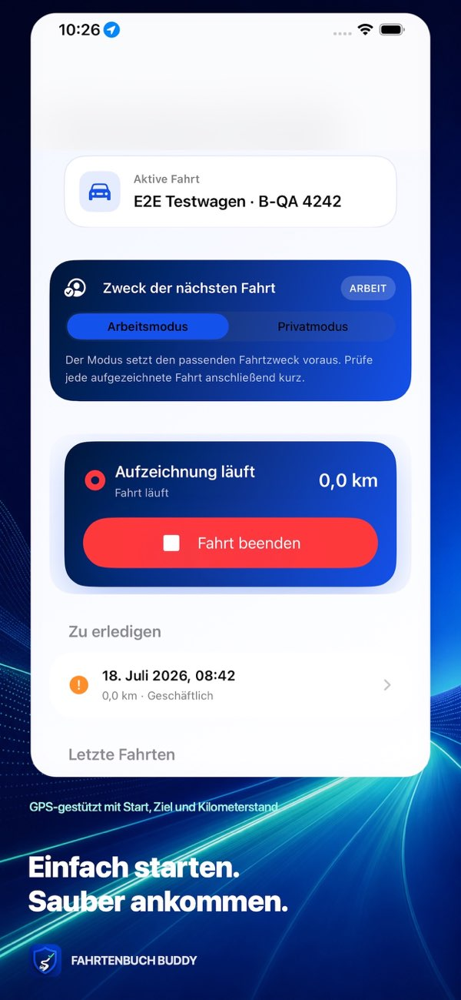
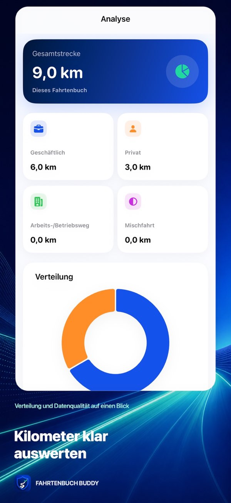

Intelligente Erkennung
Auch komplexe Fahrtverläufe werden sinnvoll verarbeitet.
Privat. Automatisch. Nachvollziehbar.
Das automatische Fahrtenbuch für iPhone und iCloud. Ohne Benutzerkonto, Werbung oder Tracking.


Automatisch unterwegs
Standort- und Bewegungssignale unterstützen die automatische Erkennung. Anschließend lassen sich Fahrten prüfen, zuordnen und nachvollziehbar abschließen.
Automatisch unterwegs
Fahrten werden zuverlässig erkannt und nachvollziehbar aufgezeichnet.
Auch komplexe Fahrtverläufe werden sinnvoll verarbeitet.
Änderungen bleiben transparent und prüfbar.
Offene Punkte werden vor dem Abschluss sichtbar.
Jede Fahrt und Ausgabe bleibt eindeutig zugeordnet.
Fahrzeugkosten bleiben vollständig an einem Ort.
Wiederkehrende Fahrten sind schneller kategorisiert.
Verständliche Übersichten für deine Entscheidungen.
Unterlagen ohne kostenpflichtige Schnittstelle erstellen.
Vorschau und Duplikaterkennung sorgen für sichere Wiederherstellung.
Systemintegration
Native Technologien statt aufgesetzter Zusatzlösungen.
Sicherer Zugriff ohne Verarbeitung biometrischer Merkmale.
Aktuelle Fahrtinformationen ohne Umwege.
Für iPhone und die Dienste entwickelt, die du bereits nutzt.
Vollständigkeitsprüfung, Tachometerabgleich und Datenqualitätsanzeige helfen dabei, einen Monat bewusst zu kontrollieren.
Fahrten, Kosten, Belege und Prüfinformationen lassen sich in nachvollziehbaren Formaten zusammenstellen.
Privacy by Design
Für die Nutzung ist kein Konto bei JSPixelcraft erforderlich.
Fahrten und Standorte werden nicht für Werbung oder Nutzerprofile ausgewertet.
Daten bleiben auf Apple-Geräten und optional im privaten iCloud-Account des Nutzers.